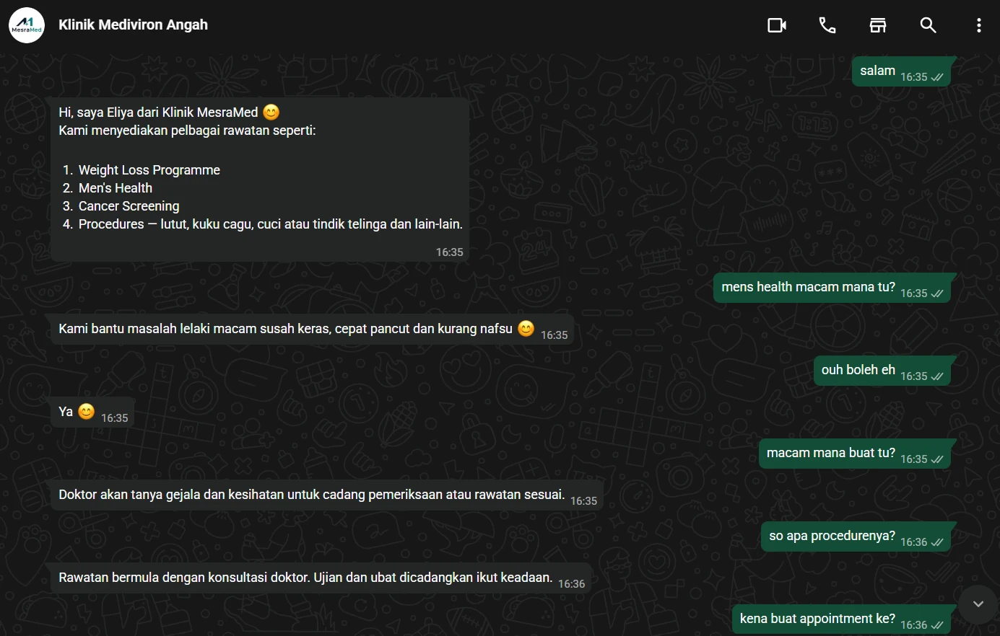
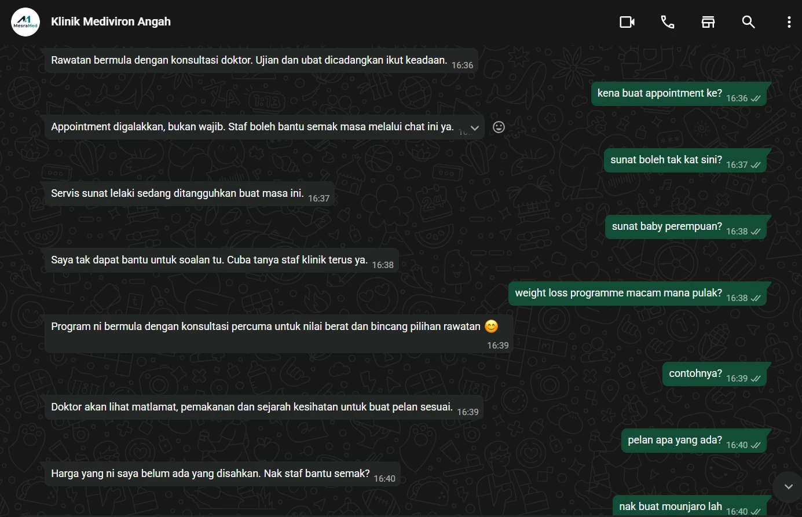
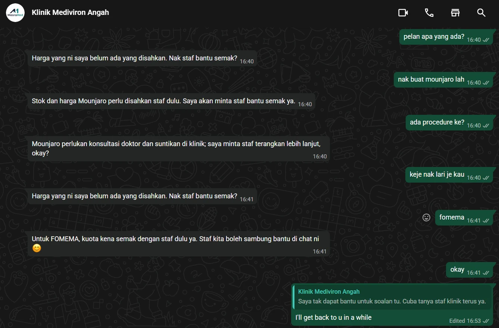
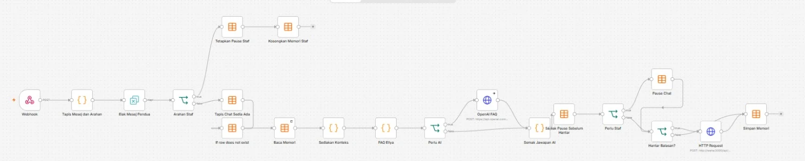
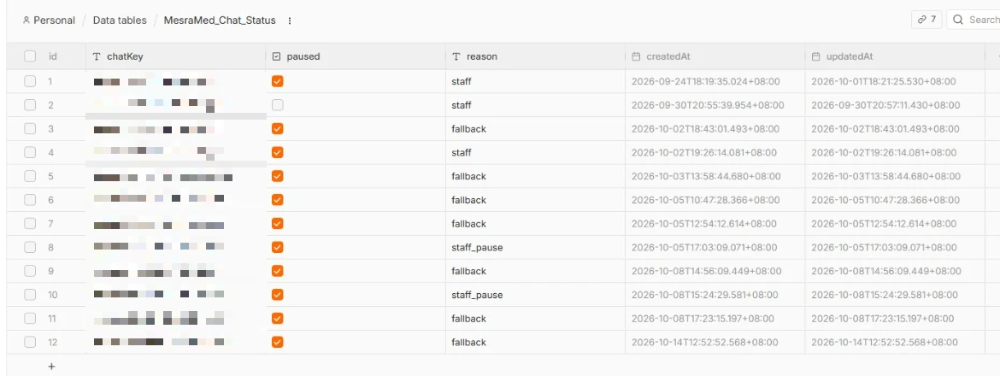
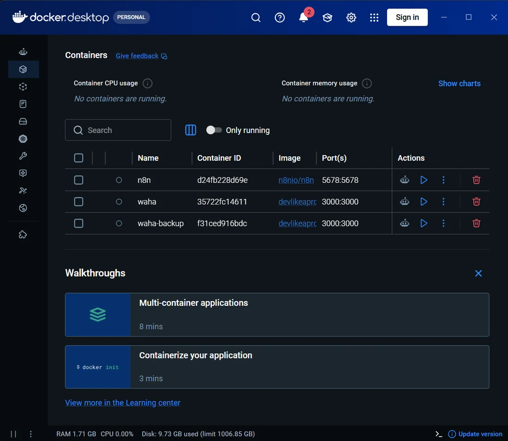

Eliya · WhatsApp AI Automation
A bilingual customer-service MVP connecting WhatsApp, WAHA, n8n and OpenAI for Klinik MesraMed.MVP khidmat pelanggan dwibahasa yang menghubungkan WhatsApp, WAHA, n8n dan OpenAI untuk Klinik MesraMed.
The operational problemMasalah operasi
Clinic staff answer the same questions again and again: services, prices, opening hours, panel coverage. Eliya takes the routine ones and hands the rest to staff.Staf klinik menjawab soalan yang sama berulang kali: servis, harga, waktu operasi, panel. Eliya mengambil soalan rutin dan menyerahkan selebihnya kepada staf.
What it doesApa yang ia buat
Replies are one sentence by default, up to three when safety, handover or details need it, in Malay or English. Confirmed service and process answers do not need staff. Panel coverage, FOMEMA, explicit booking and clinical decisions always go to a person, and emergency instructions are never suppressed.Balasan satu ayat secara lalai, sehingga tiga apabila keselamatan, serahan atau butiran memerlukannya, dalam BM atau Inggeris. Jawapan servis dan proses yang telah disahkan tidak perlukan staf. Panel, FOMEMA, tempahan yang jelas dan keputusan klinikal sentiasa diserahkan kepada orang, dan arahan kecemasan tidak pernah ditekan.
In test conversationsDalam perbualan ujian
Three test chats on WhatsApp. Eliya greets and lists services, says plainly when a service is paused, and admits when it has no confirmed price. Mounjaro stock and price, and FOMEMA quota, go to staff instead of being guessed.Tiga chat ujian di WhatsApp. Eliya memberi salam dan menyenaraikan servis, menyatakan dengan jelas apabila sesuatu servis ditangguhkan, dan mengaku apabila tiada harga yang disahkan. Stok dan harga Mounjaro, serta kuota FOMEMA, diserahkan kepada staf, bukan diteka.



How the workflow runsBagaimana workflow berjalan
The n8n workflow (version 7.5) runs in three stages. The FAQ rules and wording live in one code node, and OpenAI is called through its Responses API only when the rules cannot answer.Workflow n8n (versi 7.5) berjalan dalam tiga peringkat. Peraturan FAQ dan gaya bahasa berada dalam satu node kod, dan OpenAI dipanggil melalui Responses API hanya apabila peraturan tidak dapat menjawab.
ReceiveTerima
- Webhook from WAHAWebhook daripada WAHA
- Filter message and directionTapis mesej dan arah
- Drop duplicate messagesBuang mesej pendua
- Check for staff commandsSemak arahan staf
DecideTentukan
- Read chat memoryBaca memori chat
- Match the clinic FAQ rulesPadankan peraturan FAQ klinik
- Call OpenAI only if the rules cannot answerPanggil OpenAI hanya jika peraturan tak boleh jawab
- Check the answer before it goes outSemak jawapan sebelum dihantar
Send or hand overHantar atau serah
- Check whether the chat is pausedSemak sama ada chat dijeda
- If staff are needed, pause firstJika perlu staf, jeda dahulu
- Send the reply through WAHAHantar balasan melalui WAHA
- Save memorySimpan memori

Handover designReka bentuk serahan
The chat is paused before the handover message is sent, so Eliya cannot talk over staff. Staff send !pause or !resume from the clinic WhatsApp, and customers cannot resume a chat. Each chat gets at most three assistance notices, and the fourth handover pauses silently. There is no automatic staff notification, so the team has to watch WhatsApp.Chat dijeda sebelum mesej serahan dihantar, jadi Eliya tidak akan memotong cakap staf. Staf menghantar !pause atau !resume dari WhatsApp klinik, dan pelanggan tidak boleh menyambung semula chat. Setiap chat mendapat paling banyak tiga notis bantuan, dan serahan keempat menjeda secara senyap. Tiada notifikasi automatik kepada staf, jadi pasukan perlu memantau WhatsApp.

My contributionSumbangan saya
I set up the WAHA, n8n and OpenAI workflow, structured the bilingual FAQ and service menu, refined the prompts and handover wording, tested behaviour with staff feedback, and traced a webhook-path conflict. I also prepared backups of the app and the WhatsApp session for the move to a clinic PC.Saya menyediakan workflow WAHA, n8n dan OpenAI, menyusun FAQ dwibahasa dan menu servis, memperhalusi prompt dan ayat serahan, menguji tingkah laku dengan maklum balas staf, dan menjejak konflik laluan webhook. Saya juga menyediakan backup aplikasi dan sesi WhatsApp untuk pemindahan ke PC klinik.
A troubleshooting exampleContoh troubleshooting
A webhook-path conflict was breaking routing. I traced the conflicting configuration and fixed the path. The lesson was to check integration entry points before touching prompts or response logic.Konflik laluan webhook mengganggu routing. Saya menjejak konfigurasi yang bercanggah dan membetulkan laluan. Pengajarannya: semak titik masuk integrasi sebelum mengubah prompt atau logik jawapan.
Running itMenjalankannya
n8n and WAHA run as Docker containers, with a second WAHA container kept as a backup. Application data and the WhatsApp session sit in persistent volumes, which made the move from my laptop to a clinic PC possible.n8n dan WAHA berjalan sebagai kontena Docker, dengan satu kontena WAHA kedua disimpan sebagai backup. Data aplikasi dan sesi WhatsApp berada dalam volume kekal, yang membolehkan pemindahan dari laptop saya ke PC klinik.

Testing and feedbackUjian dan maklum balas
I tested dialogue flows, bilingual service answers and escalation. Staff feedback led to shorter replies, more natural wording and revised handover language. No pass rate or response-time figures are published because the test log is not complete.Saya menguji aliran dialog, jawapan servis dwibahasa dan eskalasi. Maklum balas staf membawa kepada balasan lebih pendek, bahasa lebih semula jadi dan ayat serahan yang disemak semula. Tiada kadar lulus atau angka masa respons diterbitkan kerana log ujian belum lengkap.
Status and next validationStatus dan pengesahan seterusnya
The MVP is built, tested in WhatsApp conversations, and backed up for migration. Continuous production use on the clinic PC is not claimed here. The next step is to confirm session reconnection, inbound and outbound messages and the handover controls on that machine.MVP telah dibina, diuji dalam perbualan WhatsApp, dan dibackup untuk pemindahan. Penggunaan produksi berterusan di PC klinik tidak dituntut di sini. Langkah seterusnya ialah mengesahkan sambungan semula sesi, mesej masuk dan keluar serta kawalan serahan pada mesin itu.